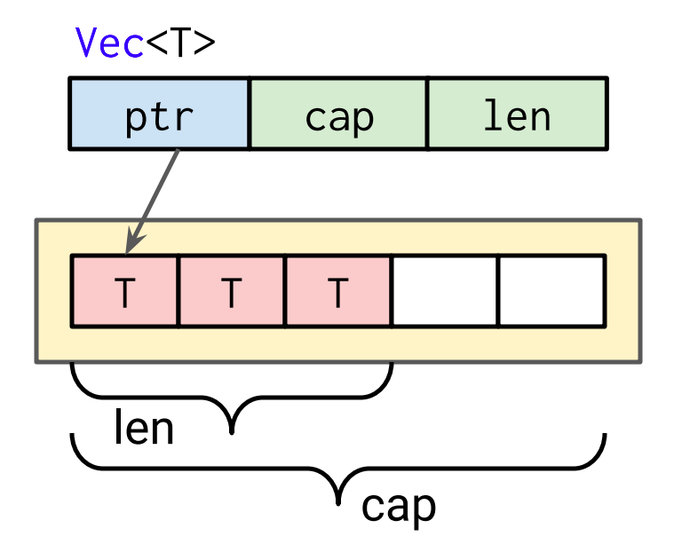

class: middle, center # Rust Collections ### 簡單好用的集合模組 <img style="border-radius: 50px" src="https://www.gravatar.com/avatar/67644641ead7ae60a795a14b7e102973?s=100" alt="Weihang Lo"> <a href="https://github.com/weihanglo">@weihanglo</a> --- ## 何謂 Collections #### From Oxford Dictionary | kəˈlɛkʃ(ə)n | _noun_ A group of accumulated **items** of a **particular kind**. - ❌ heterogeneous - ✅ homogeneous #### From Rust Documentation ... efficient **implementations** of the most common general purpose programming data structures ... - ❌ Abstract Data Types - ✅ Concrete Data Structures --- class: middle, center ## From Weihang Lo > 開箱即用的通用資料結構。 --- ## Rust Collections 特別之處 1. 繞過區域變數必須在編譯期確認記憶體大小的限制。 2. 一種智慧指標，將資料儲存在 heap 上。 3. 可使用在 _no\_std_ 環境（但是需要有 heap allocator） --- ## 變數記憶體大小檢查 ```rust fn main() { let a: [i32]; } ``` ```sh Compiling playground v0.0.1 (file:///playground) error[E0277]: the trait bound `[i32]: std::marker::Sized` is not satisfied --> src/main.rs:3:9 | 3 | let a: [i32]; | ^ `[i32]` does not have a constant size known at compile-time | = help: the trait `std::marker::Sized` is not implemented for `[i32]` = note: all local variables must have a statically known size ``` **變數在編譯期必須有常數的記憶體大小。** > 有常數記憶體大小代表該型別有實作 [`std::marker:Sized`](https://doc.rust-lang.org/stable/std/marker/trait.Sized.html) --- ## 智慧指標 - 特殊的指標類別，可動態配置記憶體（Dynamic allocation）。 - 資料會配置在 heap，而指標本身配置在 stack。 - 類似 C 的 `malloc` 等記憶體配置函數，但不需要對應的 `free`。 - 又稱 fat pointer，因為儲存指向資料的指標外，通常會儲存額外資訊，例如陣列長度，空間需求稍大。 --- ## Rust Collections 有什麼 - Vector - VecDeque - LinkedList - HashMap - BTreeMap - HashSet - BTreeSet - BinaryHeap 完整描述請參考 [std::collections](https://doc.rust-lang.org/stable/std/collections/) --- ## Vector 在相鄰的記憶體空間上儲存資料的動態陣列型別 - 只能儲存相同的型別 - 這個連續記憶體空間配置在 heap 上 - 類似 C++ `std::vector` --- ## 記憶體配置 <p style="text-align: center">  </p> .center[Raph Levien, Google. CC BY] --- ## 建立 Vector 實例 `Vec::new` 建構式 ```rust let v = Vec::new() // [] ``` `vec!` macro ```rust let v1 = vec![1, 2, 3]; // [1, 2, 3] let v2 = vec![1; 5]; // [1, 1, 1, 1, 1] ``` `into_vec`：轉換同時轉移 ownership（without clone） ```rust let s: Box<[i32]> = Box::new([10, 40, 30]); let x = s.into_vec(); ``` `to_vec`：以 clone 方式建構新的 Vector ```rust let s = [10, 40, 30]; let x = s.to_vec(); // `s` `x` 可以獨立被修改 ``` --- ## Bonus: 轉型慣例命名 **into_xx**：多用於轉移 ownership 的操作。 **as_xx**：多用於轉變型別，但不影響 ownership 也不 clone 的操作。 **to_xx**：多用於 clone 的操作。 --- ## Get indexing `v[]` - Vector 有實作 `Index`/`IndexMut` traits - out of bound 時會 panic ```rust let mut rna = vec!['A', 'T', 'C', 'G']; rna[1] = 'U'; // ['A', 'U', 'C', 'G'] ``` Safer indexing with `Vec::get` and `Vec::get_mut` - `get`: immutable borrowed of subslice - `get_mut`: immutable borrowed of subslice ```rust let mut rna = vec!['A', 'T', 'C', 'G']; rna.get_mut(1).map(|x| *x = 'U'); // ['A', 'U', 'C', 'G'] rna.get_mut(4).map(|x| *x = 'Z'); // Out of bound. No-op. ``` --- ## Slicing `v[]` 與 `v.get`／`v.get_mut` 也可傳入 Range operator，切出 sub slice。 ```Rust let mut v = vec![0, 1, 2, 3, 4]; { let v1 = &v[3..]; println!("{:?}", v1); // [3, 4] } { let v2 = v.get_mut(1..3); if let Some(v2) = v2 { v2.get_mut(1).map(|x| *x *= 2); println!("{:?}", v2) // [1, 4] } } println!("{:?}", v); // [0, 1, 4, 3, 4] { let v_slice = &mut v[..]; // mutable borrowed of the Whole vector v_slice[1] *= 10; println!("{:?}", v_slice); // [0, 10, 4, 3, 4] } println!("{:?}", v); // [0, 10, 4, 3, 4] ``` --- ## Modify ```rust let mut v = Vec::new(); // [] v.push(6); // [6] v.push(8); // [6, 8] v.push(9); // [6, 8, 9] v.pop(); // 9; [6, 8] v.pop(); // 8; [6] v.append(&mut vec![5, 4]); // [6, 5, 4] v.insert(1, 2); // [6, 2, 5 ,4] ``` --- ## Search Vector 本身也是一種 slice，所以繼承許多 slice 的 method。例如 `binary_search`、`contains`、`starts_with` 等等。 ```rust // binary_search from rust doc let s = [0, 1, 1, 1, 1, 2, 3, 5, 8, 13, 21, 34, 55]; assert_eq!(s.binary_search(&13), Ok(9)); assert_eq!(s.binary_search(&4), Err(7)); assert_eq!(s.binary_search(&100), Err(13)); let r = s.binary_search(&1); assert!(match r { Ok(1...4) => true, _ => false, }); ``` --- ## Iterate Rust 的 for loop 一種 iterator 語法糖。若一個型別非 Iterator，但是有實作 [`IntoIterator`](https://doc.rust-lang.org/stable/std/iter/trait.IntoIterator.html) trait，則會呼叫 `YourType::into_iter` 來產生迭代器。 ```rust // Original let v = vec![1, 2, 3]; for i in v {} println!("{:?}", v); // error[E0382]: use of moved value: `v` // --> src/main.rs:4:18 // | // 3 | for i in v {} // | - value moved here // 4 | println!("{:?}", v); // | ^ value used here after move // | // = note: move occurs because `v` has type `std::vec::Vec<i32>`, which does not implement the `Copy` trait ``` .right[什麼鬼，我的 Vec 被 consume 掉了？] --- ### 如何避免 for-loop ownership comsuption 1. 使用 `Vec::iter` `Vec::iter_mut`。 2. 使用 borrow（`&` or `&mut`），讓 Vec 自動 deref 成 slice ```rust let mut v = vec![1, 2, 3]; for i in &v {} for i in &mut v {} for i in v.iter() {} for i in v.iter_mut() {} println!("{:?}", v); // [1, 2, 3] ``` --- ## Reallocation 動態陣列在特定的時間點，重新配置陣列，以符合資料所需記憶體大小，這個行為我們稱之「**Reallocation**」。  --- ## Reallocation 的時機 `Vec<T>` 預設會在下列兩個狀況下發生 reallocation： - 當執行 push 或新增元素的操作時，Vec 的 `len == capacity`。 - 手動執行 `Vec::shrink_to_fit`，清理沒用到的記憶體空間。 除此之外，當執行 `Vec::pop` 等移除部分元素的 method，`Vec<T>` 永遠不會自動 realloction 來清理未用的記憶體空間。據說這是最佳化化來著（C++ 也這麼幹）。 --- ## Performance **get**: O(1) **push**: O(1) amortized **pop**: O(1) **insert(i)**: O(n - i) amortized **remove(i)**: O(n - i) --- ## 如何在同個 Vec 儲存不同型別資料 使用 `enum`。 ```rust enum SpreadsheetCell { Int(i32), Float(f64), Text(String), } let row = vec![ SpreadsheetCell::Int(3), SpreadsheetCell::Text(String::from("blue")), SpreadsheetCell::Float(10.12), ]; ``` > 注意，Rust enum 佔用的記憶體空間會以最大的 variant 為準。切莫將大小差異過大的 variant 放在同個 Vec。 --- ## 什麼時候該用 `Vec<T>` ✅ 你需要蒐集一缸子元素進行處理或傳遞，且不關心它們到底是什麼。 ✅ 你需要一個有序的序列，且只會在序列尾端新增元素。 ✅ 你需要一個 stack。 ✅ 你需要一個可變的 array。 ✅ 你需要一個配置在 heap。 ❌ 你需要一個 queue（請使用 [VecDeque](https://doc.rust-lang.org/std/collections/struct.VecDeque.html)）。 --- class: middle, center # HashMap  .center[[Jorge Stolfi](https://commons.wikimedia.org/wiki/User:Jorge_Stolfi) CC BY-SA 3.0] --- ## 說文解字 ### 什麼是 hash？ Map data of **arbitrary size** to data of **fixed size**. ### 什麼是 Map？ A collection of **key-value pairs** that each key is **unique** to the collection. ### 什麼是 hash map？ 透過雜湊函數，將任意資料轉換成固定長度鍵值，並將此鍵值與一筆資料綁定成「鍵值——資料」配對。這些配對的集合稱為 hash map（或 hash table、associative array、dictionary 等）。 --- ## Rust 的 HashMap 怎麼實作的 **HashMap** = **Linear probing** + **Robin Hood hashing** 預設雜湊演算法為 [SipHash 2-4](https://131002.net/siphash/) --- ## Linear probing 一種解決雜湊碰撞（hash collision）的策略，屬於 Open Addressing 類。在 Linear probing 策略下，每一個 hash map 的格子（cell）只會儲存一對 key-value pair。若 雜湊函數產生碰撞，則往下一個有空間的格子插入新的 key-value pair。 **Pros**：比 [Separate chaining](https://en.wikipedia.org/wiki/Hash_table#Separate_chaining) 節省記憶體空間；儲存在同陣列較 cache-friendly。 **Cons**：格子會用完，需要 reallocation 和 rehash；很倚賴雜湊函數的品質。 <img style="height: 300px" src="https://upload.wikimedia.org/wikipedia/commons/thumb/9/90/HASHTB12.svg/690px-HASHTB12.svg.png"> --- ## Create `HashMap::new` 建構式 ```rust let map = HashMap::new(); ``` 從 tuple 蒐集 ```rust let alpha = vec![String::from("A"), String::from("B")]; let num = vec![1, 2]; let map: HashMap<_, _> = alpha.iter().zip(num.iter()).collect(); // {"B": 2, "A": 1} ``` --- ## Get and Update - 直接 Indexing：`map[&key]` - 安全的 get：`map.get(&key)` 與 `map.get_mut(&key)` ```rust let mut map = HashMap::new(); map.insert(String::from("a"), 1); assert_eq!(map.get(&"a"), Some(&1)); assert_eq!(map.get(&"b"), None); assert_eq!(map[&"a"], 1); // assert_eq!(map[&"b"], 2); // panicked at 'no entry found for key' if let Some(value) = map.get_mut("a") { *value += 1; } println!("{:?}", map); // {"a": 2} ``` --- class: middle, center # 這種 update 方法太冗了！ --- ## Entry API [Entry](https://doc.rust-lang.org/std/collections/hash_map/enum.Entry.html) 提供 chaining 的 API，告訴你該 key 是否已有值，並可以對結果操作 - `or_insert` 插入（預設）值，或 - `and_modify` 改變其值。 ```rust // 簡化版 enum Entry { Vacant(VacantEntry<K, V>), Occupied(OccupiedEntry<K, V>), } ``` ```rust let mut map = HashMap::new(); map.entry("a").or_insert(1); assert_eq!(map["a"], 1); map.entry("a").and_modify(|v| *v *= 5); assert_eq!(map["a"], 5); ``` --- ## Performance **get**: expected O(1) **insert(i)**: expected O(1) amortized **remove(i)**: expectd O(1) --- ## 什麼時候該用 HashMap ✅ 你想要讓任意 key 與 value 有關聯。 ✅ 你想要有個 cache 機制。 ✅ 你就是想要一個 map，沒有其他特殊需求。 ✅ 你想要處理 JSON 的時候（誠心推薦 [serde.rs](https://serde.rs/)）。 ❌ 你的 map 內的 value 毫無意義。（請使用 [HashSet](https://doc.rust-lang.org/std/collections/struct.HashSet.html)） > Set 其實就是 HashMap 的 value 是 zero size type「`()`」 --- class: middle, center # String  --- ## 字串 Rust 的字串非常複雜，相關型別至少有七種，其中的轉換更是駭人聽聞。 | Type | Ownersip | Encoding | Scenario | | -------- | :------- | :--------------------- | :--------- | | String | owned | UTF8 | 基礎型別 | | str | borrowed | UTF8 | 基礎型別 | | char | - | Unicode scalar value | 基礎型別 | | OsString | owned | varies | 與 OS 溝通 | | OsStr | borrowed | varies | 與 OS 溝通 | | CString | owned | - (with Nul teminator) | 與 C 溝通 | | CStr | borrowed | - (with Nul teminator) | 與 C 溝通 | --- ## 建立不可變的字串 `&str` 最簡單的 string literal 的型別是 `&str`。實際上是一個 **immutable slice**，因此 slice 的 method 大部分都可直接使用。 > 字串字面量皆使用雙引號 `""`。 ```rust let s = "hello, world"; let (first, last) = s.split_at(6); assert_eq!("hello,", first); assert_eq!(" world", last); ``` --- ## 可變動的字串 `String` `String` 則是可以成長，變動的字串。 ```rust let s = String::new(); s.push_str("hello"); s.push_str(", world"); println!("{:?}", s); // hello, world ``` --- class: middle, center # 那 Rust 有字元型別？ --- ## UTF8 by default Rust 的世界中，預設的字串是 UTF8 encoding。也就是說，Rust 的 `char` 型別代表的是 [Unicode scalar value](https://www.unicode.org/glossary/#unicode_scalar_value)，佔用 4 bytes，而非 C char 的 1 bytes。 因此，Rust 的 `String` 可以被視為 `Vec<u8>` 的 byte array。 ```rust let v = vec!['h', 'e', 'l', 'l', 'o']; // 一個元素 4 bytes * 5 = 20 bytes assert_eq!(20, v.len() * std::mem::size_of::<char>()); let s = String::from("hello"); // 一個 hello string 和五個 char 大小不同！ 怪哉！！！ assert_eq!(5, s.len() * std::mem::size_of::<u8>()); ``` > 字元字面量使用 `''` 單引號。 --- ## String 長度和你想像的不一樣 ```rust use std::mem::size_of_val; let s = "中文"; println!("{:?}", s.len()); // 6 println!("{:?}", &s[0..3]); // 中 println!("{:?}", size_of_val(&s[..3])); // 3 bytes let s = "abc"; println!("{:?}", s.len()); // 3 println!("{:?}", &s[0..3]); // abc println!("{:?}", size_of_val(&s[..3])); // 3 bytes println!("{:?}", size_of_val(&s[0])); // 1 bytes ('a' in UTF8) // The werid part println!("{:?}", size_of_val(&'a')); // 4 bytes (Unicode scalar value) ``` --- ## UTF8 bytes 對照表  .center[Wikipedia CC SA 3.0] 我們可以得知： `char` 總是佔 **4 bytes**；而`String` 或 `str` 中的字元則是依 UTF-8 定義，以該字元的 code point range 決定大小。 因此，直接對 `String` 或 `&str` indexing 很容易切在非 Character boundary 的地方，儘量避免此一操作。 --- ## 型別轉換 ### `&str` to `String` ```rust let s = "hello".to_string(); println!("{:?}", s); // hello let s = String::from("hello"); println!("{:?}", s); // hello let s: String = "hello".into(); println!("{:?}", s); // hello let s = "hello".to_owned(); println!("{:?}", s); // hello ``` --- ## 將字串作為參數傳遞 我們試著寫一個接受字串的函數。 ```rust fn print_str(s: String) { println!("{:?}", s); } let my_string = String::from("hello"); let my_str = "hello"; // &str print_str(my_string); // hello print_str(my_str); // panic!!! // = note: expected type `std::string::String` // found type `&'static str` ``` --- ## 將字串作為參數傳遞 最簡單的做法就是一律用 `&str` 作為參數。 ```rust fn print_str(s: &str) { println!("{:?}", s); } let my_string = String::from("hello"); let my_str = "hello"; // &str print_str(&my_string); // hello print_str(my_str); // hello ``` --- ## 其他好玩的社群 collections [smallvec](https://github.com/servo/rust-smallvec)：儲存在 stack 上的 vec（servo 開發，用在 CSS 與 font glyph） [slab](https://github.com/carllerche/slab)：提供一致性型別集合 pre-allocated storge，類似 HashMap 的高效資料結構（[mio](https://github.com/carllerche/mio) 的作者開發） --- class: middle, center # Any advice? We are from [Hahow 好學校](https://hahow.in/). Ask us anything!